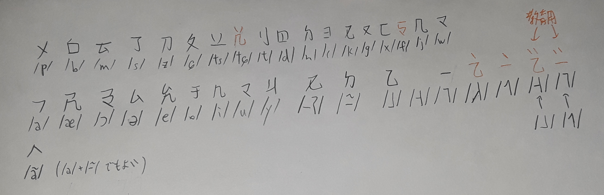
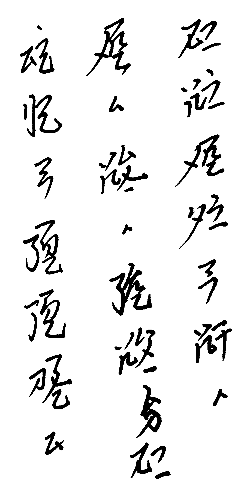

SYが2021年7月28日に「そういえば今日変種考えたんですよね」として以下の文を出してきたのがきっかけである。
これを（数回の試行錯誤ののち）【此日我心而為之我等言之周言如此。汝目而識(SY「=力」)識来乎？】であると解読できた。
11, 33, 55, 13, 35 の五声調であり、介音が滅ぶと上昇調、とのことである。母音は /a/ /æ/ /ɔ/ /ə/ /e/ /o/ /i/ /u/ /y/ の9種であり、韻尾はゼロ・声門閉鎖・母音の鼻音化の三種。
頭子音は：
iə ei → e, uo → o
あとは変調規則として 55 35 → 55 55 と 11 11 11 → 11 11 33 があるらしい。
j.vが「hia1 は -i- が h- に完全に吸われて ʃa³⁵ だけど、 pia2 は -i- が吸われないので -æ で反映したりしませんかね」と提案。pa2 → pa¹¹, pia2 → pæ¹³, pai2 → pæ¹¹ という面白い反映をすることに。
基本的にパイグ文字の体系を継承することになり、
p b m hu(声母の位置に)
c s x z zi(声母の位置に)
t d n l
k g h
i u
a ai au e ei o i u y
k n
2 - 1 2 1と 介音符号（もはやただの点）
【之】の形をしたã用の字母
とのことである。つまり、
ただし、声調符号の点は韻母の上に打つとのことである。
具体例としては、
|  |
|
となる。なおコーダのʔはkっぽくもpっぽくもなるとのことである。
「翻字はパイグ文字の転写で良い気がしたな」とのことで、
を
p, b, m, c, s, z, zi, t, d, n, l, k, g, h, hu, i, u
a, ai, au, e, ei, o, i, u, y
-k, -n, 2, (0), 1, '2, '1, "2, "1, ã
とすれば良いわけだ。/f/ については、j.vが最初に hw を提案したものの、SYが「huでいい気もする」とし、それに対しj.vは「/f/ 合字だからなぁ。f で写しても良いか（というか f の具体例を生まねば）」と発言。まあ結局 hu になった。
先ほどの文はka1 zi"a1 pai2 x'a1 ua zau an pai2 e ziek1 an cei2 ziek1 en ka1. m'a2 ta2 ua can2 can2 s"ak2 m? といった感じか。なおSY「パイグ文字表記はなんか学者感がある」とのこと。
結論としては、この変種では古牌の f は痕跡を残しておらず、パイグで hu- になるものだけが f- として反映されることに。以下ログ。
jekto.vatimeliju:
【地】huep2 fəʔ¹³
【処】hue fə¹³
SY:
まあ二重語だし
あれ、声調そうなんのか
jekto.vatimeliju:
hia1 も pia2 も上昇なので、介音を声母が吸うかどうかは無関係と判断した
SY:
あー
というかf -> hu -> fか
jekto.vatimeliju:
古牌は【地】【処】は f-、【少】は hr- か
hue1 は古牌 hruvh
【地】frvp
【処】fv
【手】fohp
んー、fv なら fə³³ なのかなぁ
jekto.vatimeliju:
【手】は foʔ⁵⁵ なのか hoʔ⁵⁵ なのか
jekto.vatimeliju:
【手】の字音どう思います？
SY:
frohpとかだっけ
jekto.vatimeliju:
fohp ですわな
古牌よりちょっと後のデータに hoop と記録されている旨が燐字海にあるんですよ
f -> hu -> f を取るなら、これは hu- ではないので hoʔ⁵⁵ になるんですよね
SY:
frV - fV
fV - hV
fuV - fV (上昇)
とかだと楽しそう
jekto.vatimeliju:
【地】frvp
【処】fv
ちなみに 【少】hruvh
SY:
あー、処そうなるんかあ
まあhかなあ
少はf'e1かなあ
jekto.vatimeliju:
これをとると、
【地】 fəʔ³³
【処】 hə³³
【手】 hoʔ⁵⁵
【少】 hə⁵⁵
なんだろうな
これはこれとして別体系としてアリだな。再構の役に立ってもらうド田舎方言
SY:
そうね
jekto.vatimeliju:
今回の体系は本来的 f の名残が見られない一貫した挙動にしよう
ゆえに【手】hoʔ⁵⁵
【少】fə³⁵
SY:
hue1はhu潰してるもんな
jekto.vatimeliju:
これによりこの方言が f -> hu -> f であることが明確に分かった
パイグ語豆覆 方言。以下ログ。
jekto.vatimeliju:
ところでこの方言って一般になんて呼ばれてるんだろう
SY:
pai2 eとか？（ほんまか
jekto.vatimeliju:
ワート弁みたいな命名のやつだ
SY:
共通語話者ならたぶんpa2 eとかなんよな
jekto.vatimeliju:
「犬とは人聞きが悪い」として無難な名前で学者は呼ぶとか？
蔑称【犬如言】でしょ
SY:
どこの方言なんだろ
jekto.vatimeliju:
いや、【犬之言】かな
SY:
大陸時代の祖地が気になる
jekto.vatimeliju:
辞書曰く、
a
噫
弱化してeに近くなることもある。
じゃあ【犬吁言】とか書いてるかもな
SY:
総称として「長短同言」とかはありそう
上位分類だけど
jekto.vatimeliju:
土地に十分な解像度の命名がされてないので、今からなんか地名考えますか
SY:
そうねえ
jekto.vatimeliju:
【豆覆】
SY:
肥沃そう
jekto.vatimeliju:
農業生産量が高そうな縁起の良い地名
kuot1 ko1 zep1
SY:
k'ok1 ko1か
パイグ語ココ方言
jekto.vatimeliju:
日本語話者ならコッコと写しそうじゃない？
SY:
確かに
SY「non-cognateはめちゃめちゃ多いわけではない」
Google spreadsheets にまとめてみた。
SY:
於、規則的には'e2かな
jekto.vatimeliju:
ʔie と見てこそ ə¹³ になるのでそう載せてる
ie と見ると je³³ じゃないかな
文白であってもいいけど。je³³
SY:
ie ei -> eiなので
jekto.vatimeliju:
そうか ʔie だと e¹³ か
SY:
まあ機能語弱化かなあ
jekto.vatimeliju:
やっぱり文読【於】je³³があってもおもろいかもな。なにに使うんだろう
SY:
伝統文語の音読（？）
jekto.vatimeliju:
伝統文語の音読および分数数詞とか如何
SY:
あー分数
いいね
SY:
ネイティブどこまで適当でも読めるんだろ
jekto.vatimeliju:
【傷】gui2 って y¹¹ かな。これおもろい
gui2 -> gy¹³ (文)
gui2 -> y¹¹ (白)
かもしれん
SY:
g, 後舌母音の前で脱落かな
jekto.vatimeliju:
gua2 で残存してるし、語によるのでは
SY:
かなあ
SY — 2021/07/28
nak1 mun1 kauk2 g'a2 kaun1 dau2 maun1 k'a2 tuk2 uai1 io tan2
おっ、かぶんないな
SY — 2021/07/28
声調のみ対立の5語なんだろな
hsjoihs — 2021/07/28
【星】pet2 > pek2
【色】pok > pok
【硬】pek1 > pek1
【奮】puat2 > p'ak2
【叫】puak1 > p'ak1
とかだいぶいいのでは
SY — 2021/07/28
だいぶいいな
hsjoihs — 2021/07/28
əʔ¹¹ iʔ¹¹ õ¹¹ aʔ⁵⁵ ũ⁵⁵
SY — 2021/07/28
数字かぁ